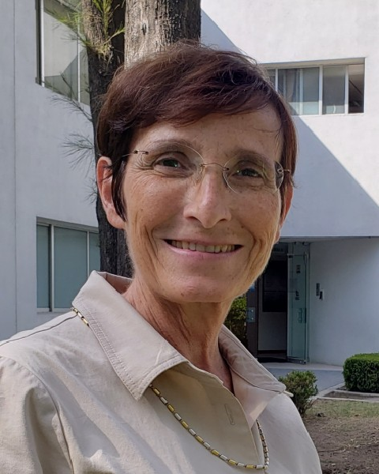

Sabine Mondié, Ph.D.
Department of Automatic Control, Cinvestav
Biography
Dr. Sabine Mondié holds a degree in Industrial and Systems Engineering from Instituto Tecnológico y de Estudios Superiores de Monterrey (ITESM), Mexico (1981). She received her M.Sc. in Automatic Control from the Center for Research and Advanced Studies (Cinvestav), Mexico (1983), and her Ph.D. in Science from Cinvestav and the Institut de Recherche en Communications et Cybernétique de Nantes (IRCyN), France (1996).
Since 1996, she has been a researcher at the Department of Automatic Control at Cinvestav, where she currently serves as department head. She is an emeritus member of Mexico’s National System of Researchers. She has supervised or co-supervised 22 doctoral theses and 25 master’s theses, and she has authored or co-authored more than 90 journal articles and more than 150 papers presented at national and international conferences.
She has delivered plenary lectures in Mexico and abroad in the field of time-delay systems. She has served as Chair of the Education Committee and Vice-Chair of the “Linear Systems” Technical Committee of the International Federation of Automatic Control (IFAC), and she is currently a member of the IFAC Council for the 2023–2026 term.
She has also served as Associate Editor for several specialized control journals, including Systems & Control Letters, European Journal of Control, and IEEE Transactions on Automatic Control.
Her research focuses on the analysis and control of time-delay systems, including technological and biological applications. Her topics of interest include stability conditions, robust stability, control of systems with input delays, and the design of delay-based controllers. Her work uses tools from time-domain, frequency-domain, and graphical analysis.
Abstract
After a general introduction to time-delay systems and the analysis of their stability in the frequency domain, this talk uses examples to explain several advantages of deliberately introducing delays into the control loop.
It is shown that an input delay can stabilize an oscillator through position feedback. It is also shown that replacing derivative action with delayed action, together with appropriate tuning, produces a signal-filtering effect in the PR control of a servomotor; this technique is effectively applied to quadrotor altitude control.
The talk briefly reviews other control schemes where this approach is useful and discusses the analog implementation of delays.